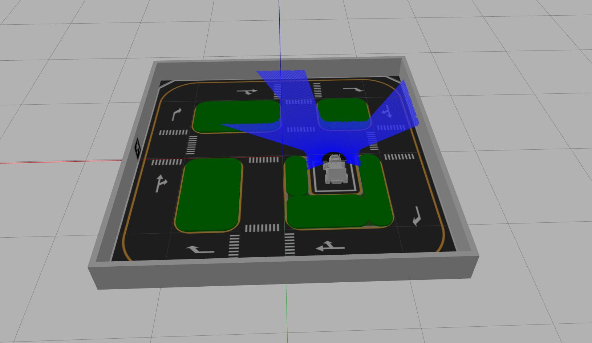

Extended notes 2: ROS 2 Architecture & Your First LIMO Simulation
These longer notes are for students who want more depth. The class lecture for this topic is Lecture 2: First Node and Lecture 3: Topics and Lecture 4: Services. Inside these notes, "Lecture N" refers to the numbering of the extended notes, not the current 14-lecture course. See the current course plan.
ros2 node / topic commandsThe bar at the top is your map of the 2 hours: 11 stops, each with a time budget, ticked off as you scroll. Every stop starts with an "In short" sentence, ends with an ⚡ Quick check, and has something to click, drag or type. The main playground is the virtual turtlesim lab in §2.2, and the ▶ chips on the terminal blocks run their commands there. Quick checks, lab missions, the sorting game and the quiz earn ⭐ XP: go from 🐣 Rookie to 🏆 ROS Master. 🔎 Go deeper panels hold the extra detail. They are optional in class and make good homework. Afterwards, repeat every command on your Ubuntu VM.
For the instructor: the 2-hour run sheet (timings, what to demo, what to assign)
Press ⏱ Start class in the top bar when you begin. The timer shows where the plan says you should be, and turns red if you fall more than 5 minutes behind.
| Time | Stop | Do in class | Move to homework if short on time |
|---|---|---|---|
| 0:00 | 🧠 2.1 Big picture | Pizza-restaurant flip cards (whole class), break-the-graph demo | ROS 1 mode of the graph demo |
| 0:10 | 🐢 2.2 Nodes | Everyone starts turtlesim (VM or virtual lab), node list / info | — |
| 0:25 | 📻 2.3 Topics | Teleop + topic echo live on the projector, pub/sub playground | QoS depth, Twist table details |
| 0:45 | 📞 2.4 Services | /clear, /spawn; blocking-call demo | 🔎 call_async panel |
| 0:55 | 🛵 2.5 Actions | Teleop rotate keys + send_goal --feedback, cancel demo | 🔎 "under the hood" panel |
| 1:05 | 🎛️ 2.6 Parameters | Colour mixer, then the sorting game in pairs | YAML / params-file |
| 1:15 | 📦 2.7 Messages | Read LimoStatus together (5 min only) | 🔎 .msg builder |
| 1:20 | 🚗 2.8 LIMO | Launch Gazebo, drive it, predict an arc, LiDAR explorer | Exercise: hz comparison |
| 1:45 | 📡 2.9 DDS | 👥 Live "chaos" activity with the whole room | 🔎 RMW vendors panel |
| 1:52 | ✅ 2.11 Quiz | Quiz on phones or laptops, discuss the most-missed question | Lab worksheet = homework |
| 1:58 | 🏁 Wrap-up | Exit ticket (3 questions) | 2.10 Troubleshooting = reference |
2.1The Big Picture: What ROS 2 Actually Is
In Lecture 1 you installed Ubuntu 22.04, ROS 2 Humble Hawksbill, and the LIMO simulation packages, and you probably ran one command just to prove the install worked. Today we stop treating ROS 2 as a magic word typed into a terminal and start treating it as what it actually is: not a single program. There is no "ROS 2.exe" you double-click. ROS 2 is a collection of libraries and conventions that let many small, independent programs — called Nodes — find each other on a computer (or across a network of computers) and exchange data, without any of them needing to know the others' code, language, or even which machine they're running on.
This matters immediately for LIMO. A single LIMO robot, once fully running, has a Node reading the LiDAR, a Node reading the depth camera, a Node reading wheel encoders and the IMU, a Node turning velocity commands into motor signals, and — once you reach the navigation lectures later in the course — Nodes for mapping, localization, and path planning. None of these programs was written as one giant file. They are separate processes, often shipped by different teams, that agree on a common "language" for talking to each other. That common language is ROS 2.
ROS 2 (Robot Operating System 2) is middleware for robotics: a set of libraries and tools that let independent processes called Nodes discover one another and exchange Messages over a data distribution layer called DDS, without a central point of control.
Every idea in today's lecture has a twin in a busy pizza restaurant. Guess each one, then tap the card. The 🤖 line shows the real LIMO example you'll meet later.
If you've read anything about the original ROS ("ROS 1"), you may have heard of roscore — a single
master process that every Node had to register with, and which the whole system depended on. ROS 2 has
no master process. It is fully decentralized: Nodes discover each other directly over the
network using DDS discovery, so there's no single point of failure and no single program you must remember to
start first.
Picture a tiny slice of LIMO's software running in Gazebo: a Node that pretends to be the LiDAR publishes distance readings, a Node that decides "should I stop or keep going" listens to those readings, and a Node that pretends to be the motor driver receives the final velocity command. None of these three programs imports the others' source code. They only agree on two things: the name of the channel they're talking over, and the shape of the data on that channel. That agreement is the whole idea of a Topic and a Message, which we formalize in section 2.3. For now, just look at the shape of the graph:
Figure 2.1 — A minimal LIMO graph: three independent Nodes, connected only by two named Topics.
The graph in Figure 2.1 is a simplified version of what actually runs when you launch LIMO's differential-drive simulation later in this lecture. The real graph has more Nodes (Gazebo's physics plugin publishing simulated sensor data, robot_state_publisher broadcasting the robot's geometry, and so on) but the underlying pattern — small Nodes wired together by named Topics — is identical to the real hardware. Learn the pattern in simulation and it transfers directly to the physical robot.
Each dot is one Message moving along a Topic. Click a Node to inspect it, then stop it. Switch to ROS 1 to see what a central master changes.
/obstacle_avoider. Does /motor_driver still get /cmd_vel from teleop?
② Stop /motor_driver. What happens to the publishers? (gold dots = published, but nobody is listening.)
③ In ROS 1 mode, kill roscore, then stop and restart /lidar_driver. Why can't it reconnect? Try the same in ROS 2.
By the end of today you should be able to answer, for any ROS 2 system you're handed:
- What Nodes are currently running, and what is each one responsible for?
- What Topics is a given Node publishing to, and what is it subscribed to?
- Which interactions should be a Service, which should be an Action, and why?
- How do I change a Node's behavior at runtime without touching its code?
/obstacle_avoider Node crashes. Does /lidar_driver stop publishing /scan?2.2Nodes — the Living Units of the Graph
ros2 node list and ros2 node info show who is alive and what they do.
A Node is a single running process that does one job. In a well-designed robot, a Node has one
clear responsibility: read a sensor, run an algorithm, or drive an actuator. When you type ros2 run
turtlesim turtlesim_node, you are starting exactly one Node — a single operating-system process that ROS 2
tooling can see, name, and introspect.
A Node is an independently executable ROS 2 process, identified by a unique name in the graph, that communicates with other Nodes through Topics, Services, Actions, and Parameters.
Let's stop reading about Nodes and look at a real one. Open a terminal — this course uses terminator so you can split one window into several panes instead of juggling separate terminal windows — and run:
A turtlesim window pops up with a turtle in the middle. That window is being driven entirely by one Node. In a second terminal pane, ask ROS 2 who is currently alive on the graph:
ros2 node info is one of the most useful commands you will run this entire course — it answers
exactly the four questions from section 2.1 for a single Node: what it subscribes to, what it publishes, and what
Services and Actions it offers.
turtlesim draws a cartoon turtle you can drive around with the keyboard. It looks childish — that's the point.
It has almost zero startup time, needs no Gazebo physics, and cannot break anything. Every command you learn on
the turtle today (node list, topic echo, service call, param
set) is the exact same command you will run against the real LIMO in section 2.8 and in every later
lecture. Get comfortable on the turtle before you touch the robot.
A practice copy of turtlesim. Type real commands: Tab completes, ↑ recalls history,
Ctrl+C stops a running command. Long-running nodes (turtlesim, teleop, a looping topic pub) open
in their own "pane", shown as a chip under the turtle window. The missions tick themselves off as you go.
In the lab: start turtlesim, then ros2 node list, then start turtle_teleop_key and run
ros2 node list again. You now have two Nodes. Open rqt_graph and drive with the pad: the
arrow on the graph is the Topic /turtle1/cmd_vel. Stop the teleop pane (✕). The turtle is still alive,
because every Node is its own process.
If ros2 node list prints nothing, the most common cause isn't a broken install — it's that the
Node was launched in a different terminal pane that you already closed, or your workspace's environment isn't
sourced in the current pane. Every new terminal pane needs source /opt/ros/humble/setup.bash (and
later, your workspace's install/setup.bash) before ROS 2 commands will find anything.
With turtlesim still running, open a third terminator pane and run ros2 node list again. Then close
the turtlesim window (or Ctrl+C the Node) and run it once more. What changes, and why does that prove there is
no central "master" keeping a permanent registry?
2.3Topics — Publish and Subscribe
Nodes are useless in isolation — a Node that reads a LiDAR but tells no one is just wasted electricity. The most common way Nodes share data in ROS 2 is the Topic: a named, typed channel that any number of Nodes can publish onto and any number of Nodes can subscribe to.
A Topic is a named channel over which Nodes exchange Messages of one fixed type, using a publish/subscribe pattern. Publishing is asynchronous — a Publisher sends data without waiting for, or even knowing about, any Subscriber. The relationship is many-to-many and fully decoupled: Publishers and Subscribers can start, stop, and crash independently of each other.
Let's drive the turtle to see this live. In one pane, start the keyboard teleop Node:
Now the graph has two Nodes: /turtlesim and /teleop_turtle, and one Topic wiring them together. Confirm it from a third pane:
ros2 topic echo /turtle1/cmd_vel on the
projector. Class: shout out what appears each time a key is pressed, and why the stream stops when the key is released.
Click into the teleop pane and press an arrow key — you'll see /turtle1/pose keep streaming, now with
changing numbers, while ros2 topic hz reports roughly how many Messages per second are flowing. This
is exactly the pattern LIMO's real LiDAR uses on /scan, its wheel odometry uses on /odom,
and its IMU uses on /imu — a continuous, self-paced stream, with no one waiting for a reply.

rqt_graph gives you the same information as a live picture instead of text — worth running any time a graph feels confusing:
rqt_graphMessage types are just structured data — a table you fill in. Here are the ones you'll meet constantly once you're working with LIMO instead of a turtle:
| Message type | Carries | Seen on |
|---|---|---|
geometry_msgs/msg/Twist | Two vectors: linear (x, y, z m/s) and angular (x, y, z rad/s) | /cmd_vel |
sensor_msgs/msg/LaserScan | A header, an angle range/increment, and an array of range readings in meters | /scan |
sensor_msgs/msg/Image | A header, height/width, pixel encoding, and the raw pixel byte array | /limo_camera/image |
nav_msgs/msg/Odometry | An estimated pose (position + orientation) and a twist (current velocity), each with a covariance matrix | /odom |
sensor_msgs/msg/Imu | Orientation, angular velocity, and linear acceleration, each with a covariance matrix | /imu |
Notice that every Message above starts with, or effectively behaves like, a timestamped reading rather than a one-off command. That's the tell for "this should be a Topic": the data is naturally continuous, and no single Node needs to block and wait for an answer. Compare that with "save the map to disk" — that happens once, on request, and blocking until it's done is completely fine. That's the tell for a Service, which we cover next.
Add and remove Publishers and Subscribers on /scan while it runs. Then make one subscriber slow and watch its queue.
Anatomy of the Message you will send most: geometry_msgs/msg/Twist
A Twist is two 3-D vectors. A ground robot like LIMO or the turtle only uses two of the six numbers:
linear.x (forward speed, m/s) and angular.z (turn rate, rad/s). ROS uses a right-handed
frame: x forward, y left, z up, so a positive angular.z turns
counter-clockwise, which is a left turn.
| Field | Differential-drive LIMO / turtle | Try it in the virtual lab |
|---|---|---|
linear.x | + forward, − backward (m/s) | "{linear: {x: 2.0}}" |
linear.y | ignored: a diff-drive robot can't slide sideways (a Mecanum LIMO can!) | — |
angular.z | + turn left ↺, − turn right ↻ (rad/s) | "{angular: {z: 1.57}}" |
| both together | drives an arc of radius R = v / ω | "{linear: {x: 2.0}, angular: {z: 1.0}}" |
turtlesim applies each velocity command for 1 second and then stops, so one --once with
linear.x: 2.0 moves the turtle about 2 units. Can you draw a square using only these commands?
With teleop and turtlesim both still running, run ros2 topic echo /turtle1/cmd_vel in a fourth
pane, then press an arrow key in the teleop pane. What do you see appear, and why does it stop the instant you
release the key?
/scan. How many times must the LiDAR driver publish each scan?2.4Services — Request and Response
Not everything a robot does is a continuous stream. Sometimes you want to ask a Node one specific question and wait for one specific answer, then move on. ROS 2 has a dedicated pattern for that: the Service.
A Service is a synchronous, one-to-one request/response interaction. A Client sends a Request to a named Service and blocks until the Server sends back a Response. Unlike a Topic, a Service call happens once and then the exchange is over.
turtlesim's /turtlesim Node offers a Service called /clear, which wipes the trail the
turtle has drawn. Call it directly from the command line:
The trail behind the turtle disappears instantly. std_srvs/srv/Empty carries no data at all in either
direction — calling it is exactly like pressing a physical button. Other Services carry real fields; for example
/spawn takes an x, y, theta, and name and returns
the spawned turtle's name.
| Topic | Service | |
|---|---|---|
| Communication style | Publish/subscribe, asynchronous | Request/response, synchronous |
| Cardinality | Many publishers, many subscribers | One client talks to one server per call |
| Timing | Streaming, repeats continuously | One-shot, triggered on demand |
| Caller behavior | Never waits for a reply | Blocks until the response arrives |
| LIMO example | /scan, /odom, /imu | "clear costmap", "save current map" |
Beginners often try to use a Topic for something that should be a Service — for example, publishing a "save_map_now" message and hoping something handles it — with no way to know whether the save actually succeeded. If you need a definite answer back before your program continues, that's a Service, not a Topic.
The other work counter is everything else your program could be doing. Watch it freeze while a Service call is waiting. Then set server offline and call again.
Go deeper: blocking vs. call_async() in real code (2 min read)
ros2 service call and a plain synchronous call() block the caller exactly as shown above.
In your own rclpy Nodes you will normally use call_async(), which returns a future,
so the Node can keep spinning while it waits. You still get exactly one response at the end, and
no progress updates. If you need progress, you need an Action.
Run ros2 service call /spawn turtlesim/srv/Spawn "{x: 2.0, y: 2.0, theta: 0.0, name: 'turtle2'}".
Then run ros2 node list and ros2 topic list again. Explain in two sentences why
no new Node appeared but a whole new set of /turtle2/… Topics and Services did. (Hint: which process
is actually simulating turtle2?) Then drive turtle2 by publishing on /turtle2/cmd_vel.
2.5Actions — Long-Running Goals
A Service is a poor fit the moment a task takes a long time. Imagine calling a Service named "drive_to_kitchen" — your program would sit frozen, blocked, for however many minutes it takes the robot to arrive, with zero visibility into whether it's stuck, half-way there, or already crashed into a shelf. ROS 2 has a third communication pattern purpose-built for exactly this situation: the Action.
An Action is a long-running, asynchronous task with three parts: a Goal sent by the Client, periodic Feedback streamed back while the task runs, and a final Result when it finishes. Unlike a Service, an in-progress Action Goal can be cancelled (preempted) at any time.
Figure 2.3 — The Action lifecycle: one Goal, several Feedback messages, one final Result.
Later in this course, once LIMO's Nav2 stack is running, you will send it a target pose and it will drive there
on its own, dodging obstacles along the way. That interaction is a real Action called
NavigateToPose. It is never implemented as a Service, because the drive can take minutes, the robot
needs to report live progress, and you must be able to cancel it (say, if a person walks in front of the robot).
Keep this in mind now — it will make far more sense the day you actually call it.
| Pattern | Duration | Feedback while running | Cancellable |
|---|---|---|---|
| Topic | Continuous stream | N/A — it is itself a stream | No |
| Service | Instant / short | None | No |
| Action | Seconds to minutes | Yes, periodically | Yes |
You already used an Action today
The teleop window you opened in §2.3 printed "Use G|B|V|C|D|E|R|T keys to rotate to absolute orientations".
Each of those keys sends a Goal to turtlesim's /turtle1/rotate_absolute Action server, and
F cancels it. You can send the same Goal from the command line and watch the Feedback stream in:
Notice the three parts of the .action file, separated by ---: Goal
(theta), Result (delta) and Feedback (remaining).
A .srv file has only two parts (Request --- Response), and a .msg has one. Press
Ctrl+C while a goal is running (in the virtual lab too) and the CLI cancels it. You can't do that with a Service.
Go deeper: what an Action is built from (1 min read)
ROS 2 builds every Action from the two primitives you already know: three Services
(send_goal, cancel_goal, get_result) and two Topics
(feedback and status). The Action API bundles them into one easy interface.
Send a navigation goal and watch the Feedback stream back while the client stays free. Send another goal and press Cancel half-way. Switch tabs to compare with the Service.
You are asked to add a "dock and recharge" behavior to LIMO, which can take up to two minutes and should be abortable if a human needs the robot immediately. Would you implement it as a Service or an Action? List one concrete problem you'd hit if you picked the wrong one.
2.6Parameters — Tuning a Node Live
Every Node can carry a set of named, typed settings called Parameters that change its behavior without touching or recompiling its code. This is how the same navigation software can drive a small warehouse robot and a large delivery robot just by changing numbers in a YAML file, not the source.
A Parameter is a named, typed value owned by a specific Node that configures its behavior and can be read or changed at runtime, either from the command line, a YAML file, or another Node.
turtlesim exposes its background color as three Parameters. Inspect and change them live:
The background instantly shifts to a different shade — no code change, no rebuild, no restart of the Node. This is
the same mechanism that, on the real LIMO, holds values like wheel radius, max linear/angular velocity limits, and
LiDAR frame IDs; changing a robot's tuning is a ros2 param set call or a line in a YAML file, not a
code edit.
A car's live speedometer reading changes every instant — that's a Topic. Setting cruise control to "keep it at 60 km/h" stays fixed until you change it again — that's a Parameter. Fast-changing sensor data goes on a Topic; relatively stable configuration goes in a Parameter.
Move the sliders to see the matching ros2 param set commands, the YAML file and the launch-time flag. Then send them to the virtual lab.
ros2 param set /turtlesim background_r 150.0 fails with "Wrong parameter type … is of type
{integer}, setting it to {double} is not allowed". In ROS 2 each parameter's type is fixed when the Node
declares it: 150 is an integer and 150.0 is a double. Setting 300 fails for a
different reason: turtlesim only accepts 0–255. Try both in the virtual lab and read the error messages.
Change all three of background_r, background_g, and background_b to make
the turtlesim canvas roughly purple, then run ros2 param get on each to confirm the new values
stuck. Finally, run ros2 param dump /turtlesim and find your values in the YAML it prints.
You'll make this choice every time you design a robot feature. Read each LIMO scenario and pick one pattern.
2.7Custom Messages in the Wild: LimoStatus
.msg. LIMO's LimoStatus is one.
Every Message type you've seen so far — Twist, LaserScan, Odometry — ships
with ROS 2 or a common interfaces package. But robots also need to report information that has no generic
equivalent. LIMO's onboard embedded controller reports its own internal state — battery voltage, which of the
four drive modules is attached, whether it's in an error state — and none of the stock message packages have a
field for "which of LIMO's four drive modes is currently active." So the LIMO driver package defines its own
custom message type: limo_msgs/msg/LimoStatus.
A custom message is a Message type defined by a package rather than borrowed from
std_msgs, geometry_msgs, or another common package, written as a plain-text
.msg file listing field types and names, which the ROS 2 build tools turn into real message code.
# limo_msgs/msg/LimoStatus.msg
std_msgs/Header header
uint8 vehicle_state
uint8 control_mode
float64 battery_voltage
uint16 error_code
uint8 motion_mode| Field | Type | Meaning |
|---|---|---|
header | std_msgs/Header | Timestamp and frame ID, like almost every ROS 2 sensor message |
vehicle_state | uint8 | Overall state of the vehicle (e.g. normal, low battery, estop) |
control_mode | uint8 | Whether the robot is being driven by remote control, command mode, or another source |
battery_voltage | float64 | Live battery voltage reported by the embedded controller |
error_code | uint16 | Bitmask/code reporting active fault conditions |
motion_mode | uint8 | Which of LIMO's drive modules is currently active: differential, Ackermann, Mecanum, or tracked |
LIMO is a "four-in-one" robot — the same chassis can carry a differential-drive, Ackermann-steer, Mecanum, or
tracked drive module, a topic we go deep on in Lecture 3. The embedded controller inside LIMO always knows
which module is physically attached and reports it through motion_mode in
LimoStatus. A navigation Node can read this field at startup to decide which kinematic model to
use, instead of you hardcoding it — the exact same "don't hardcode it, expose it" philosophy Parameters use,
applied to hardware state instead of configuration.
Once a LIMO driver is running (real hardware or, on some setups, a bridged simulation), inspect the type from the command line exactly like any other message:
ros2 interface show limo_msgs/msg/LimoStatusGo deeper: .msg vs .srv vs .action, and build your own message (homework, ~15 min)
Custom messages are how ROS 2 stays generic without being vague. The framework ships broadly useful types like
Twist and LaserScan so unrelated packages can interoperate, but any package is free to
define its own .msg files the moment its data doesn't fit an existing shape. You will write your
own custom messages later in this course once you start building LIMO-specific behaviors.
The three interface file types side by side
| File | Used by | Sections | Example from today |
|---|---|---|---|
.msg | Topics | 1: the fields | geometry_msgs/msg/Twist, limo_msgs/msg/LimoStatus |
.srv | Services | 2: Request --- Response | turtlesim/srv/Spawn |
.action | Actions | 3: Goal --- Result --- Feedback | turtlesim/action/RotateAbsolute |
Start from LimoStatus or a preset, then add, rename and retype fields. The builder checks the ROS naming rules and shows the generated file, what topic echo would print, Python usage and the build-system lines.
LimoStatus message?2.8Meeting LIMO in Gazebo for Real
/cmd_vel to drive, /scan to see.
Time to leave the turtle behind. This course simulates LIMO in Gazebo 11 (the classic Gazebo,
driven through gazebo_ros and gazebo_plugins — not the newer gz-sim line) using the
limo_gazebosim package, which depends on limo_description and limo_msgs.
Launch LIMO's default differential-drive simulation:

The Gazebo window opens with LIMO sitting in a simulated world. Leave that terminal pane running the launch file, and open a fresh terminator pane for everything else. First, look at the graph LIMO just created:
This is the same shape of graph as the mini three-node LIMO example back in Figure 2.1, just fleshed out with the real Nodes Gazebo's plugins create. Drive the robot the "normal" way first, using teleop:
ros2 run teleop_twist_keyboard teleop_twist_keyboardClick into that pane and use the on-screen key legend to move LIMO around the Gazebo world, then Ctrl+C when you're done. Now drive it the "raw" way — publishing directly onto /cmd_vel without any teleop Node in between, exactly the verified command from the course's tested lab:
ros2 topic pub --once /cmd_vel geometry_msgs/msg/Twist "{linear: {x: 0.25}, angular: {z: 0.5}}"--once
Without --once, ros2 topic pub keeps publishing that same Twist message repeatedly,
forever, at a default rate — LIMO will keep driving even after you think you've stopped it. If your simulated
(or real!) robot won't stop moving, check for a runaway ros2 topic pub still running in a
forgotten terminal pane and Ctrl+C it.
Before you type a /cmd_vel command in Gazebo, predict the path. Set a forward speed v, a turn rate ω and how long you'll send it, then press ▶ Drive. LIMO is drawn to scale (32 × 22 cm).
--once can leave LIMO circling. Always finish with a zero Twist
("{}"). The "1 m circle" preset needs 21 s, which is 2π / 0.3.
Finally, peek at the LiDAR stream briefly — this is a firehose of numbers, so echo it for a moment and then Ctrl+C:
ros2 topic echo /scanheader:
stamp: {sec: 1892, nanosec: 430000000}
frame_id: limo/laser_link
angle_min: -3.1241390705108643
angle_max: 3.1241390705108643
angle_increment: 0.005817705299
range_min: 0.15000000596046
range_max: 12.0
ranges: [1.842, 1.839, 1.847, ..., inf, inf, 2.910]
---
Those numbers are easier to read with a picture. Every entry in ranges is one laser beam. Its direction
is not stored in the message, so you compute it: angle = angle_min + i × angle_increment, measured
from the robot's forward x-axis, positive to the left. inf means the beam hit nothing within
range_max.
ranges[i] to a pictureThis uses the same angle_min, angle_max and angle_increment as the echo above. Drag LIMO around the room, rotate it, and click anywhere to see which beam index points there.
inf? ③ Drive LIMO close to the pillar and watch the
"front min" decision flip. That is the core of the obstacle avoider you'll write in Lecture 7.
Every command you just ran works completely unchanged against the physical LIMO once you switch from a Gazebo
launch file to the real hardware driver's launch file, later in the course. /cmd_vel,
/scan, /odom, and /imu keep the same names and types either way — this is
exactly why simulation-first development works.
With limo_gazebo_diff.launch.py running, run ros2 topic hz /odom and
ros2 topic hz /scan one after another. Which publishes faster? Given what each sensor is used for,
does that difference make sense?
linear.x = 0 and angular.z = 0.5 makes LIMO…2.9DDS and the Network Layer
We said in section 2.1 that ROS 2 has no master process, and that Nodes just "find" each other. The mechanism underneath that is DDS (Data Distribution Service), an industry-standard middleware that ROS 2 is built on top of. Every Node periodically announces itself on the local network segment; other Nodes listening for that announcement automatically learn its Topics, Services, and types, and connect directly to it, peer-to-peer, with no broker or master process sitting in between.
DDS (Data Distribution Service) is the publish/subscribe middleware standard that ROS 2 uses under the hood for Node discovery and data transport. ROS 2 talks to DDS through a swappable adapter layer called an RMW (ROS Middleware) implementation — you can change which DDS vendor ROS 2 uses without changing any of your own code.
DDS discovery works over the local network by default. In a classroom where fifteen students are all running
turtlesim (or LIMO in Gazebo) on the same Wi-Fi, you can end up seeing — and accidentally controlling — a
classmate's turtle. The fix is one environment variable, added to ~/.bashrc so it applies to every
new terminal:
# add to ~/.bashrc
export ROS_LOCALHOST_ONLY=1
With ROS_LOCALHOST_ONLY=1 set, DDS discovery and traffic are restricted to your own machine, so your
Nodes only ever see your own Nodes.
ROS_DOMAIN_ID: separate "rooms" on the same network
ROS_LOCALHOST_ONLY=1 hides you from everyone. Sometimes you want two machines to talk, for
example your laptop and a real LIMO on the same Wi-Fi, but not to the other fourteen teams. For that, DDS has
domains. Nodes only discover Nodes with the same ROS_DOMAIN_ID (default
0). If each team picks its own number (0–101 is the safe range on Linux) and sets it on both the laptop
and its robot, every team gets a private graph on shared Wi-Fi.
# add to ~/.bashrc on BOTH your laptop and your LIMO
export ROS_DOMAIN_ID=17- Everyone on the same Wi-Fi opens a new terminal with no DDS settings and runs
ros2 run turtlesim turtlesim_node. - The instructor runs
ros2 run turtlesim turtle_teleop_keyand presses ↑. Watch the room. 😱 - Everyone runs
ros2 node list. How many/turtlesimnodes do you see? - Now
export ROS_DOMAIN_ID=your seat number, restart turtlesim, and try again. Whose turtle moves now?
No Wi-Fi or VM? Do the same experiment in the simulation below.
Four students on one Wi-Fi all run turtlesim + teleop on default settings. Press Drive and watch whose turtle moves. Then change the settings until your graph is private.
Go deeper: swapping the DDS vendor (RMW), and the Jazzy name change (homework, ~8 min)
Some course setups swap the default RMW implementation (Fast DDS in Humble) for rmw_cyclonedds_cpp,
another common DDS vendor, which can behave more predictably on flaky classroom Wi-Fi:
# add to ~/.bashrc
export RMW_IMPLEMENTATION=rmw_cyclonedds_cppThe fact that "which DDS vendor" is a one-line environment variable, not a code change, is a direct payoff of ROS 2's layered design: your Nodes are written against the ROS 2 client library API, which talks to an RMW interface, which talks to whichever DDS implementation is installed. Swap the bottom layer, keep every line of your Python or C++ untouched.
Pick a different RMW implementation and see which layers change.
Keep every machine that must talk to each other (laptop + LIMO) on the same RMW. Mixing vendors is allowed in theory but is a common source of mysterious discovery problems.
This course uses ROS 2 Humble, where ROS_LOCALHOST_ONLY=1 is the standard switch. In newer
distributions (Jazzy and later) it's deprecated in favour of
ROS_AUTOMATIC_DISCOVERY_RANGE=LOCALHOST. If you follow a newer tutorial online and the variable seems to
do nothing, that's why.
2.10Troubleshooting Clinic
Almost every "ROS is broken" moment in the first weeks is one of the problems below. Pick the symptom and work through the checks in order. The first check fixes it most of the time. This is the same order experienced ROS developers use.
When anything is off, run these three before you change any code: ros2 node list (is everyone alive?),
ros2 topic list -t (do the names and types match?), and ros2 topic info /the_topic (is anyone
actually publishing and subscribing?). These three commands narrow most bugs to a single Node or Topic.
2.11Self-Test Quiz & Lab Worksheet
Twelve questions covering every section. Each answer comes with an explanation. Aim for 10+ before Lecture 3.
🏠 Homework: Lab Worksheet (hands-on missions)
Do these on your Ubuntu VM (missions 1–4 also work in the virtual lab). Click a mission to tick it off. Your progress is saved in this browser. Submit a short PDF with one screenshot per mission and your written answers.
- The Square. Draw a closed square with turtle1 using only
ros2 topic pub --oncecommands. Hint: 1 s atlinear.x: 2.0is a 2-unit side, andangular.z: 1.5708for 1 s is a 90° turn. How many commands do you need? - Two-turtle art. Spawn
turtle2at (2, 2), give it a red pen of width 5 with/turtle2/set_pen, and draw a triangle with it. Answer in writing: why didros2 node listnot change, butros2 topic listdid? - Save your colours. Make the background purple with
ros2 param set, save it withros2 param dump /turtlesim > purple.yaml, then restart turtlesim with--ros-args --params-file purple.yaml. Proves you can move configuration out of code and into a file. - Cancel an Action. Send
rotate_absolutewiththeta: 3.14and--feedback, and press Ctrl+C half-way. Record the final heading withros2 topic echo /turtle1/pose --once. Why is it not 3.14? - LIMO circle. In Gazebo, make LIMO drive a circle of radius ≈ 1 m, then stop it with a zero Twist. Use the Twist planner in §2.8 to choose v and ω first, then compare the prediction with Gazebo.
- Graph detective. With
limo_gazebo_diff.launch.pyrunning, screenshotrqt_graphand write one sentence per Node describing its job. - Rate table. Measure
ros2 topic hzfor/odom,/scan,/imuand the camera image topic. Put them in a table and explain the differences.
2.12Summary, Cheat Sheet, Checkpoint & Glossary
Today you replaced "type commands and hope" with a real mental model of ROS 2: a decentralized graph of Nodes that exchange data over Topics, request answers over Services, run long tasks over Actions, and expose their tuning knobs as Parameters — all discovered automatically over DDS, with no master process. You proved every one of those ideas twice: once cheaply on turtlesim, and once for real by launching AgileX LIMO inside Gazebo, inspecting its live graph, and driving it two different ways from the command line.
- One thing you can now do in ROS 2 that you couldn't do 2 hours ago.
- For your campus-delivery-robot sketch from §2.1: one arrow that should be a Service or an Action, and why.
- One thing that is still confusing. It will be answered at the start of Lecture 3.
Lecture 2 Command Cheat Sheet
Nodes
Topics
Services
Actions
Parameters
Interfaces & tools
LIMO in Gazebo
Network / DDS (~/.bashrc)
- I can explain why ROS 2 has no master process, unlike ROS 1's
roscore. - I can list a Node's Topics, Services, and Actions using
ros2 node info. - I can tell the difference between a Topic, a Service, and an Action, and pick the right one for a new task.
- I can read and change a running Node's Parameters with
ros2 param get/set. - I successfully launched
limo_gazebosim limo_gazebo_diff.launch.pyand saw LIMO's real graph. - I drove simulated LIMO both with
teleop_twist_keyboardand with a rawros2 topic pub --oncecommand. - I know what
ROS_LOCALHOST_ONLY=1does and why a classroom needs it. - I can send an Action goal with
ros2 action send_goal … --feedbackand cancel it with Ctrl+C. - I can work out the angle of any
ranges[i]in a LaserScan, and predict the arc a Twist will drive. - I scored 10 or more out of 12 on the self-test quiz in §2.11.
Connection to the course Everything from here forward assumes today's vocabulary
without re-explaining it. Lecture 3 opens LIMO's chassis conceptually and covers its four drive modules
(differential, Ackermann, Mecanum, tracked) — you'll recognize the motion_mode field from
LimoStatus the moment it comes back up. Later navigation lectures will hand you the
NavigateToPose Action you were only introduced to today, and you'll already know why it isn't a
Service.
Glossary
- Node
- An independent ROS 2 process with one clear responsibility, discoverable by name on the graph.
- Topic
- A named, typed channel for asynchronous, many-to-many publish/subscribe data streaming.
- Service
- A synchronous, one-to-one request/response call between a Client and a Server.
- Action
- A long-running, cancellable task with a Goal, streaming Feedback, and a final Result.
- Parameter
- A named, typed setting owned by a Node that can be read or changed at runtime without editing code.
- DDS
- The Data Distribution Service middleware standard ROS 2 uses for decentralized Node discovery and transport.
- Message
- The fixed data structure carried by a single Topic, Service, or Action, defined in a .msg/.srv/.action file.
- rqt_graph
- A GUI tool that draws the live ROS 2 graph — Nodes and the Topics connecting them — as a diagram.
- QoS (Quality of Service)
- Per-Topic delivery settings, such as history depth (how many messages to queue) and reliability. You met depth in the pub/sub playground.
- RMW
- The ROS Middleware interface: the adapter layer that lets ROS 2 run on different DDS vendors, chosen with
RMW_IMPLEMENTATION. - ROS_DOMAIN_ID
- A number that splits one network into separate ROS 2 "rooms". Only Nodes with the same domain ID discover each other.
- Twist
geometry_msgs/msg/Twist: linear + angular velocity. For LIMO,linear.xis forward speed andangular.zis turn rate (+ = left).- LaserScan
sensor_msgs/msg/LaserScan: one LiDAR sweep. Beamipoints atangle_min + i × angle_increment.
Further Reading (official ROS 2 Humble docs)
- Beginner: CLI tools: the official turtlesim tutorials for nodes, topics, services, parameters and actions. They follow today's lecture closely.
- ROS 2 Concepts: background on the graph, interfaces, QoS, domain IDs and middleware.
Common Mistakes
- Confusing Topics and Services — trying to "wait for an answer" on a Topic, or trying to stream continuous data through a Service.
- Forgetting
--onceonros2 topic pub, leaving a runaway publisher driving the robot forever. - Mistyping the message type string (e.g.
geometry_msgs/msg/twistwith a lowercase t, or a misspelt package) and getting "The passed message type is invalid". Copy the exact type fromros2 topic list -t, and prefer the fullpkg/msg/Typeform. - Setting a parameter with the wrong type (
150.0for an integer parameter). ROS 2 parameters are typed. - Publishing to
/cmd_velwhen the robot listens on a namespaced topic such as/turtle1/cmd_vel. Check thatros2 topic infoshows a subscriber. - Not sourcing the workspace (
source install/setup.bash) before runningros2 launch limo_gazebosim ..., so ROS 2 reports it cannot find the package.